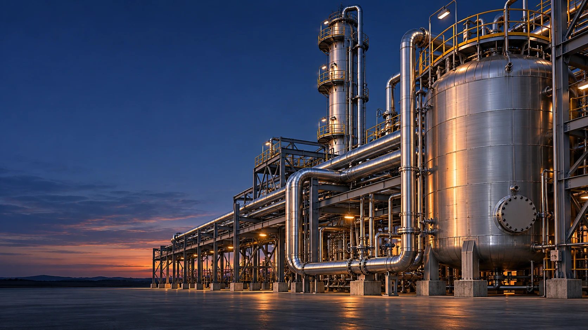
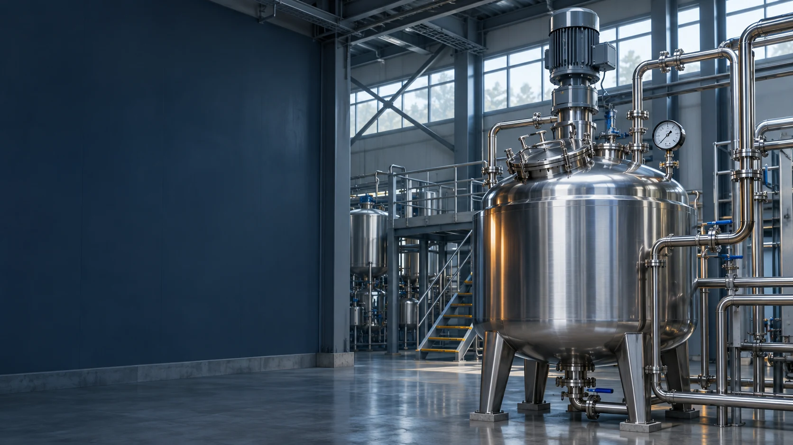
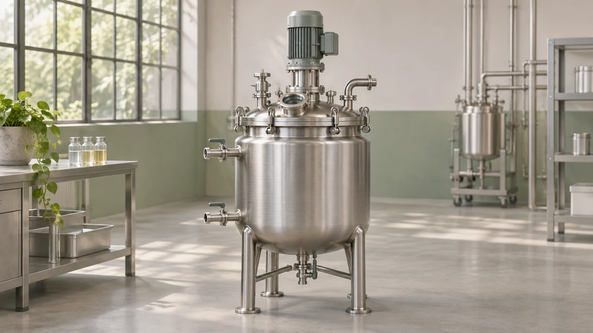
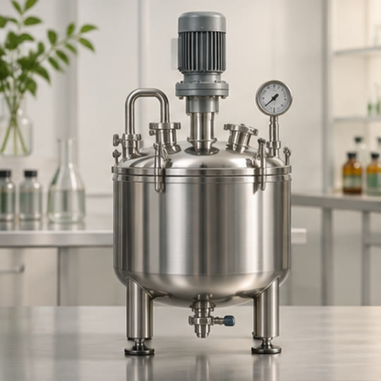
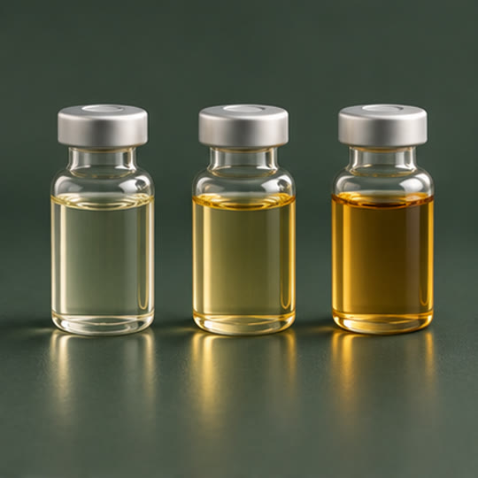
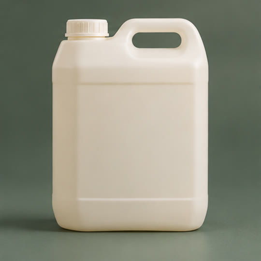
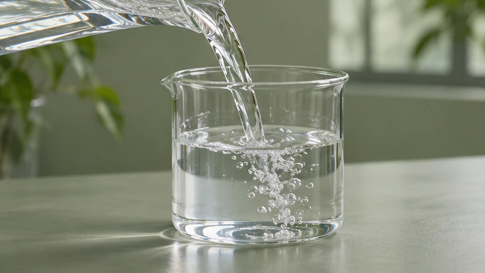

Поставки и выпуск на одной площадке
«Везен» поставляет химическое сырьё и выпускает собственную продукцию. Рассматриваем проекты по технологической карте заказчика, от подбора аппарата до согласования упаковки.
О компанииПроизводственные мощности
О производстве1 м³
1 аппарат на площадке
2,5 м³
1 аппарат на площадке
4 м³
1 аппарат на площадке
6,3 м³
2 аппарата на площадке

Разбираем технологическую карту
Для оценки проекта нужны требования к продукту, размер партии и условия фасовки.

Подбираем аппарат
Сопоставляем объём партии и технологические требования с возможностями оборудования.

Подготавливаем отгрузку
Уточняем тару, маркировку и документы. Упаковка зависит от продукта и условий поставки.

Что поставляем
Открыть каталог
Собственная продукция
Реагенты и моющие средства, которые выпускаем в Дзержинске.
Смотреть
Растворители
Индивидуальные и смесевые растворители для промышленности.
Смотреть
Кислоты и соли
Кислоты, соли и комплексообразователи.
Смотреть
Амины
Этаноламины и отвердители.
Смотреть
ПВХ
Смолы и пластикаты для кабельных и литьевых изделий.
Смотреть
Лесохимия
Таловые масла, жирные кислоты и очищенный скипидар.
Смотреть
Перекисные соединения
Промышленное сырьё на основе перекисных соединений.
Смотреть
Тара
Еврокубы, металлические и пластиковые бочки.
СмотретьСтатьи и материалы
Все статьиЧто указать в запросе на выпуск партии
Какие данные нужны технологу для оценки проекта.
Читать статьюКак выбрать фасовку ацетата хрома
Канистра, бочка или еврокуб. От чего зависит выбор для конкретной партии.
Читать статью
ЭДТА-2Na и ЭДТА-4Na
Как сверить форму соли и требования к спецификации перед заказом.
Читать статью
Что уточнить при выборе реагента
Сведения о воде, объёме и требуемом результате.
Читать статьюВопросы по поставке
Поставка, документы и выпуск по вашей технологии.
Как заказать продукцию?
Откройте карточку товара и нажмите «Запросить предложение». Укажите требуемую марку, массу или объём, нужную тару и город доставки.
Можно ли заказать небольшую партию?
Везен отгружает от одной канистры или мешка. Для некоторых позиций действует собственный минимальный объём. Уточните его в карточке или у отдела продаж.
Как узнать, есть ли товар в наличии?
Отправьте запрос с названием и требуемым объёмом. Отдел продаж подтвердит наличие, срок комплектации и стоимость.
Можно ли получить паспорт качества или безопасности?
Да, запросите нужные документы на конкретную марку и партию. Доступные ТУ и паспорта производителя размещены в разделе «Документы и поставка» карточки.
Где посмотреть фасовку?
Откройте характеристики товара. Для жидкого сырья в каталоге встречаются канистры, бочки, еврокубы и цистерны. Совместимость тары с продуктом подтверждают при заказе.
Можно ли заказать доставку в другой регион?
Укажите адрес выгрузки и размер партии. Отдел продаж уточнит возможный способ доставки и срок с учётом вида груза и фасовки.
Где забрать продукцию самовывозом?
Склад находится в промышленной зоне Дзержинска. Точный адрес, время и порядок въезда согласуйте с менеджером при оформлении заказа.
Как подобрать марку или аналог?
Сообщите требуемый CAS, обозначение по ТУ или ГОСТ и параметры из спецификации. Возможность замены оценивают по назначению и требованиям к продукту.
Как заказать выпуск по своей технологии?
Укажите продукт, объём партии и требования к упаковке. Возможность выпуска оценивают по технологической карте и оборудованию.
Как связаться с отделом продаж?
Позвоните по номеру +7 952 448-48-97 или отправьте заявку через страницу контактов.
Есть технологическая карта?
Расскажите, какое сырьё нужно, где его будут использовать и какой объём планируете заказать.
Дзержинск, проспект Чкалова, 2